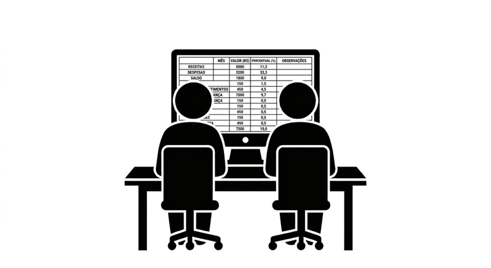
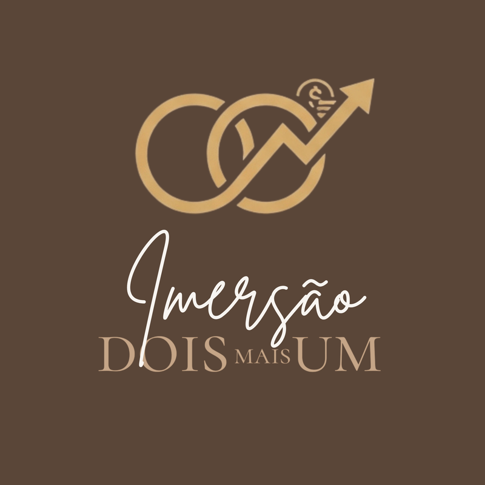
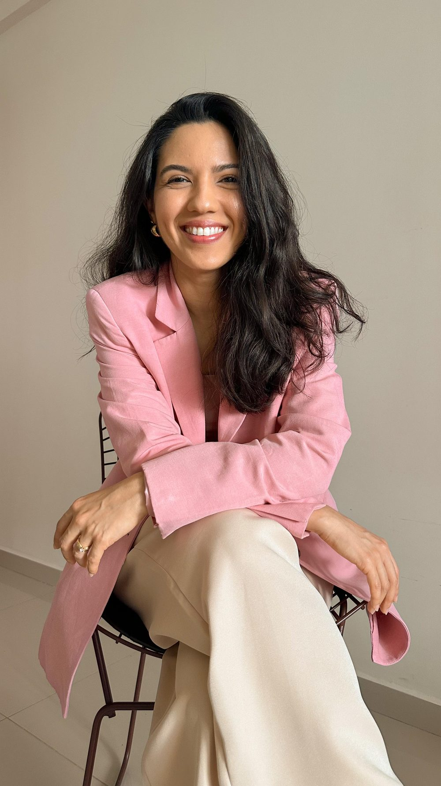

Antes do dia 28, vocês:
- Recebem acesso imediato à aula gravada de preparação, na Hotmart.
- Fazem o encontro financeiro do casal com o roteiro em PDF.
- Registram dívidas, despesas e parcelas futuras do cartão, e chegam com os números em mãos.
Evento online e ao vivo · dia 28/11 das 14:30 às 18:30
Em 4 horas, vocês dois fazem o diagnóstico financeiro do casal, montam o orçamento juntos e saem sabendo qual é o próximo passo. Sem briga e sem um carregar o peso sozinho.
Vocês até tentam se organizar... mas parece que não importa o que façam, o ciclo se repete mês após mês
Somos Michael e Cinthia: um administrador e uma contadora, casados há mais de 10 anos e com mais de uma década de atuação em finanças e contabilidade.
Cinthia conta
Na nossa lua de mel, até água de coco na praia precisava caber no orçamento! Gastamos mais do que podíamos na festa e não queríamos começar o casamento endividados.
E eu tinha vergonha daquela situação:
Como um administrador e uma contadora tinham chegado àquele ponto?
Como recém-casados, vieram as responsabilidades. Somado a isso, a vontade de empreender juntos. Pegamos um empréstimo para realizar meu sonho de ter uma loja de roupas. Mas gastamos quase todo o dinheiro na estrutura e recorremos ao cartão de crédito para comprar os produtos.
Poucos meses depois, a loja quebrou e nossas dívidas ultrapassaram R$ 100 mil.
O sonho de empreender acabou se transformando em uma dívida de mais de 100 mil reais.
Eu entrei em depressão. Não era apenas um sonho que tinha dado errado. Para mim, era um FRACASSO TOTAL. Não conseguia trabalhar, cuidar da casa e ainda sentia que tinha colocado todo o peso do meu erro nas costas do meu marido.
Mas não estávamos sozinhos. Oramos, reconhecemos nossos erros e pedimos ajuda a Deus. Com Sua misericórdia, estratégias, disciplina e muita força, conseguimos sair daquela situação.

Os anos passaram e parecia que tudo estava sob controle. Até que nossa primeira filha, Chloe, nasceu, e no mesmo período clientes do Michael atrasaram, um deles cancelou o contrato e nossa receita despencou. Sem reserva, voltamos ao cartão de crédito e usamos todo o décimo terceiro para quitar as dívidas.
Aprendemos que sair das dívidas era apenas parte do caminho.
Quando nossa segunda filha, Sophie, nasceu, já tínhamos começado uma reserva. Aos seis meses, ela teve uma reação alérgica ao ovo, e médicos, exames e medicamentos foram consumindo o que havíamos guardado. Pouco a pouco, o dinheiro acabou.
A vida pode trazer imprevistos que não conseguimos controlar. Mas podemos nos preparar melhor para enfrentá-los.
Mesmo em meio às nossas próprias dificuldades, ajudávamos outros casais com suas finanças. Um deles chegou até nós com dívidas em 14 cartões de crédito. Pensamos que bastaria apresentar nossa planilha.
Mas descobrimos algo muito maior: eles não conseguiam conversar sobre dinheiro sem brigar. Quanto mais ela falava, mais ele se fechava.
Orientamos que ela parasse de insistir e entrasse em oração. Poucos dias depois, aquele homem estava chorando e reconhecendo seus erros. "Só Deus para fazer algo assim", foram as palavras dela.
Ali entendemos que o problema financeiro de um casal nem sempre está apenas nos números.
Foi a partir de histórias como essa que decidimos unir as duas profissões para ajudar outros casais. Os primeiros chegaram, as transformações aconteceram, e em agosto conduzimos uma imersão com casais de líderes e pastores da nossa igreja. Os testemunhos vieram ali mesmo.
Vocês vão sair da imersão sabendo como:
Menos improviso, mais clareza e decisões construídas juntos.
Tudo se resume a 3 fases simples que se complementam para preparar vocês antes, durante e depois do encontro ao vivo.


A imersão é no sábado, 28/11
A imersão começa antes do dia 28. Assim que a inscrição é confirmada, vocês recebem a aula de preparação e o roteiro do encontro financeiro do casal.
Quem entra hoje faz esse encontro com calma e chega ao dia 28 com os números em mãos. Quem deixa para a véspera chega sem essa base, e é com ela que o orçamento do casal é construído.

Tenha acesso a tudo isso por uma condição especial:
De R$400 por:
12x R$25
ou R$ 247 à vista.
Valor promocional de lançamento. O valor previsto para as próximas edições é R$ 400.
Quero garantir nossa vaga ➔Garantia de 14 dias: 100% do dinheiro de volta.
É mais comum do que parece. Em muitos casais, um dos dois chega resistente, quase sempre por cansaço de conversas que viraram cobrança. A imersão foi pensada para ser o contrário disso:
E se ele não puder ou não quiser no dia, a gravação fica disponível por 30 dias para vocês assistirem juntos depois.

suamentoraA partir da experiência com empresas, identificou como muitos desafios financeiros também se repetiam dentro dos casamentos e das famílias. Iniciou os atendimentos voltados à organização financeira de casais, levando sua experiência profissional para a realidade familiar.
Participou do desenvolvimento dos materiais e das ferramentas utilizadas nos atendimentos. Trouxe um olhar feminino para a análise das decisões financeiras e para a dinâmica do casal. Passou a atuar diretamente nos atendimentos, complementando o trabalho de Michael e fortalecendo a identificação das esposas durante o processo. Contribui para integrar a organização financeira à realidade e às necessidades dos casais.
Duas formações, experiências complementares e
Unimos Administração e Contabilidade à experiência profissional e à vivência de mais de 10 anos de casamento para desenvolver uma abordagem que olha para as finanças do casal de forma integral: comportamento, princípios bíblicos e organização financeira.
é ajudar casais a tomarem decisões em unidade, organizarem seus recursos e construírem uma vida financeira alinhada aos seus valores e propósito.
Acesse as perguntas frequentes
Não! A imersão também é para casais que ganham bem, mas não conseguem guardar dinheiro, não têm um orçamento organizado, não possuem uma reserva de segurança ou não conseguem alinhar suas decisões financeiras.
Sim! Apesar da importância da planilha, ela não resolve sozinha os problemas financeiros de um casal. Por isso trabalhamos com 3 pilares: comportamental, espiritual e organização financeira.
Além da participação ao vivo, até 3 dias após o evento, iremos disponibilizar a gravação da imersão e vocês terão acesso por 30 dias.
Pode. Você sai com clareza sobre a situação financeira da casa e com o caminho para organizar. Mas o orçamento é construído a dois, então o resultado é maior quando o casal participa junto. A gravação fica disponível por 30 dias, e vocês podem assistir juntos depois.
Serve. Nosso conteúdo usa princípios bíblicos como fundamento, e a maior parte dos casais que atendemos é cristã. Mas o orçamento, a organização das dívidas e a rotina financeira funcionam para qualquer casal.
Sim, esse é um dos pontos principais que trabalhamos no pilar comportamental. Na imersão vocês vão aprender a lidar com as diferenças sobre dinheiro em casal.
Sim! Vamos construir o orçamento de vocês ao vivo, utilizando as informações levantadas no encontro financeiro, que será antes do evento. Todas as informações para realizar o encontro estarão disponíveis imediatamente dentro da plataforma.
Sim. Durante a imersão, vamos apresentar estratégias para organizar as dívidas e entender caminhos possíveis. Porém, cada família tem uma realidade financeira diferente e, em situações mais específicas, pode ser necessário um planejamento individualizado.
Assim que o pagamento for aprovado, vocês recebem acesso imediato à plataforma Hotmart, onde ficam os materiais da pré-imersão. No dia 28/11, o encontro ao vivo acontece pelo Zoom, com o link liberado dentro da plataforma. Dá para participar pelo celular, computador ou tablet.
Sim. Durante os 30 dias após a imersão, vocês podem tirar dúvidas diretamente com a gente, dentro da plataforma.
Você tem garantia blindada de 14 dias. Se não gostar, pode pedir 100% do dinheiro de volta. Sem letras miúdas, sem enrolação.
Sábado, 28/11 · das 14:30 às 18:30 · ao vivo pelo Zoom